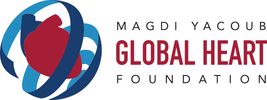

Courtesy of Magdi Yacoub Heart Foundation
The Magdi Yacoub Global Heart Foundation
The Magdi Yacoub Heart Foundation (MYF) – an Egyptian registered charity NGO – was founded in 2008 by Sir Magdi Yacoub, the late chemistry Nobel Prize winner Dr. Ahmed Zewail, and Ambassador Mohamed Shaker. MYF is running one of the exceptional projects of enormous significance to the health and wellbeing of the Egyptian people that is entirely based on donations. The foundation established the Aswan Heart Centre (AHC) in 2009, to provide free-of-charge, world-class cardiovascular care to patients, and is now expanding its services to by building The Magdi Yacoub Global Heart Foundation in Cairo, Egypt to expand the Aswan Heart Centre model of care to the capital city. With the establishment of the Magdi Yacoub Global Heart Centre in Cairo, the foundation will be able to triple the service and the amount of hearts saved, all free-of-charge and with the latest technology and technique in cardiovascular medical care. MYGHC - Cairo will give the foundation the possibility to treat 12,000 patients, in contrast to 4,000 currently, and save more than three times as many lives.
Here are some statistics from the Aswan Heart Centre:- The institution has a 4.5% mortality rate for open-heart surgery, compared to the global average of 8.3%. This statistic is on par with the best American and European hospitals.
- An average of 49,000 outpatient consultations are provided annually, half of which are for children.
- An average of 4,600 surgical procedures and catheterizations performed on patients annually
- An average of 350 healthcare professionals trained annually through the Foundation's training programs.
- An average of 390,000 patients are seen and served at the Aswan Heart Centre each year.
- Accomodate up to 120,000 outpatients annually
- Treat up to 12,000 patients annually
- Give neonates a 95% chance of living a normal life
- Triple the number of training graduates (from 550 currently to ~1750)
- Develop an advanced scientific research center
Why Helping Kids with Heart Disease Matters
Within Egypt, cardiovascular disease is the leading cause of death out of all non-communicable diseases, responsible for 275,665 deaths in 2021 alone. Risk factors associated with cardiovascular disease continue to rise at an alarming rate. Rheumatic heart diseases are still responsible for approximately 2,000 deaths per year and of the 18,000 babies born with congenital heart disease each year, 5,000 die due to the lack of proper facilities.
What Figeographie is Doing
Figeographie embodies the motto "Where Nature Meets Lens, Where Lens Meets Humanity" by photographing the world and writing blogs on our website about environmental subjects, ranging from pollution to healthcare. However, we also believe in taking action to help humanity directly.
To expand our impact on humanity, Figeographie is a strong supporter of the Magdi Yacoub Heart Foundation's efforts in making all aspects of treatment for congenital heart disease completely free for children in Egypt, the MENA region, and the GCC region. We are aiming to raise $10,000 to make this service a greater blessing to all children who face the hardship of low oxygen in the blood, too many or too few blood vessels, faulty heart valves, and other difficulties.We believe that the treasure of beauty is not just in the sight of the eyes, but in the action of human beings. Help support this cause to spread the beauty of generosity to children in need of healthcare support.
Donate Today!
All donations go directly to The Magdi Yacoub Global Heart Foundation. Your support can save lives and give children a chance at a healthy future.
- Donating $100 covers the cost of an outpatient consultation and an echocardiogram study. Over 45,000 outpatients are served at Aswan Heart Centre annually.
- Donating $500 covers the cost of one advanced noninvasive diagnostic imaging for a patient. Annually, Aswan Heart Centre performs over 4,000 CTs or MRIs on patients.
- Donating $1,000 covers half the cost of in-hospital medications for a patient during their hospital stay. Aswan Heart Centre accommodates over 4,500 patients annually for hospital stays.
- Donating $5,000 covers the cost of a catheter operation or half the cost of a surgical operation at Aswan Heart Centre, where over 3,000 catheter operations are performed annually.
- Donating $10,000 covers the cost of an open-heart surgical operation at Aswan Heart Centre, where over 1,000 surgical operations are performed annually.
The Magdi Yacoub Global Heart Foundation is a US-based 501(c)(3) non-profit charity, and your donation can be claimed as a deduction on your US income tax return.